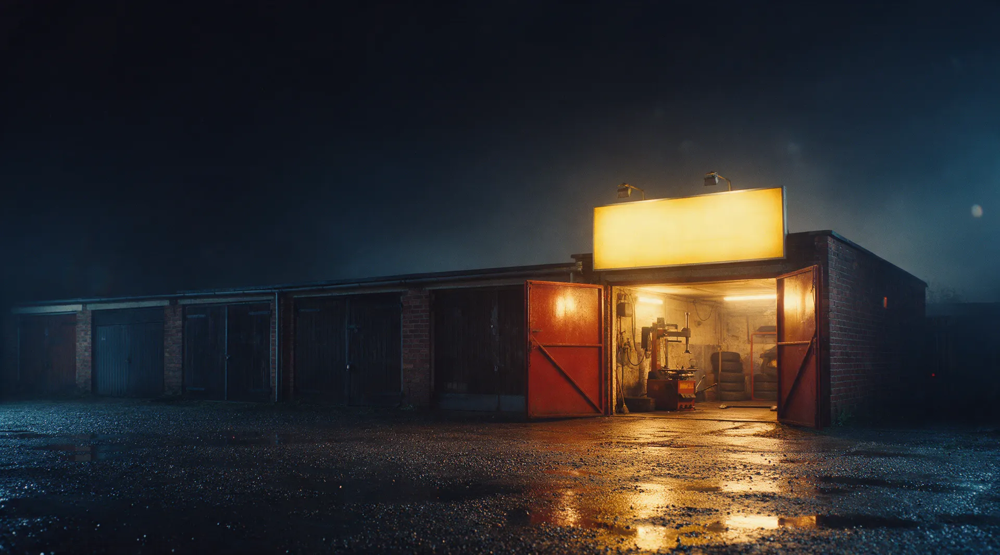
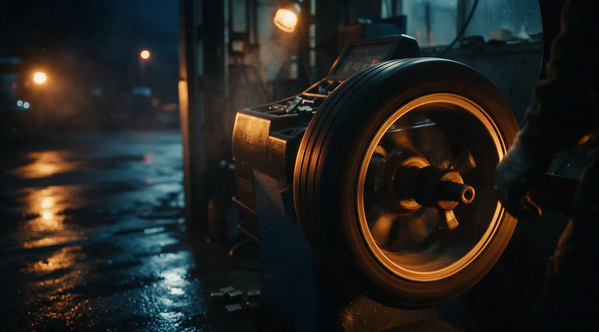
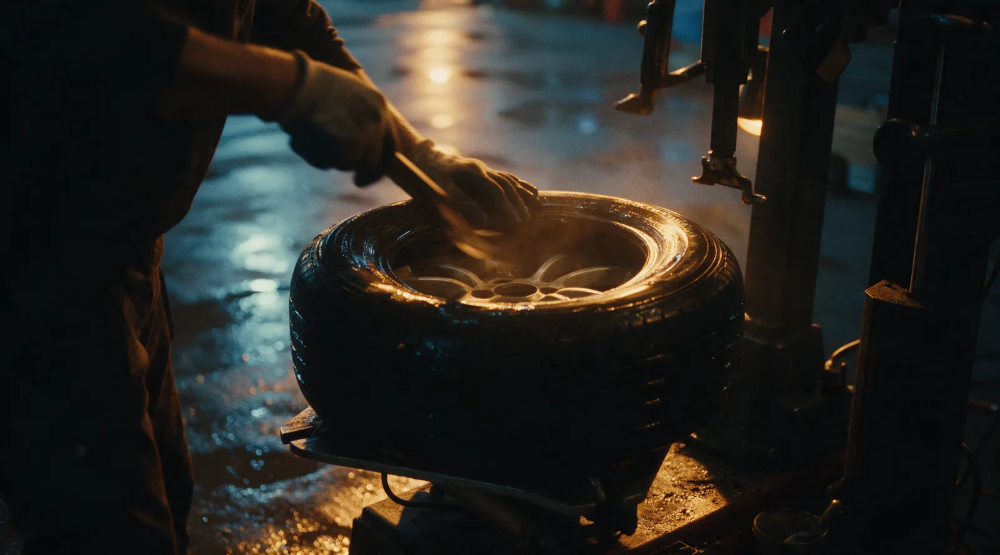
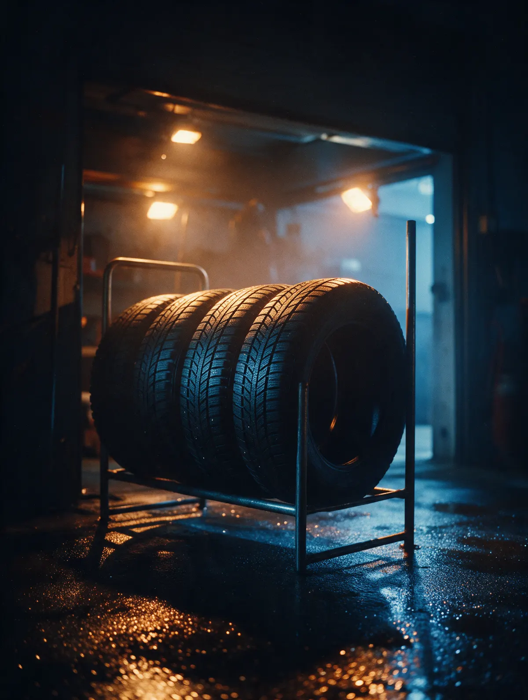

Шиномонтаж «Запаска» · Томск · круглосуточно
Шиномонтаж в Томске – круглосуточно, с гарантией на работу
Переобувка и балансировка, ремонт проколов, правка литых дисков и дошиповка. Пробили колесо ночью – приезжайте или запишитесь на удобное время.
- Работаем круглосуточно
- Гарантия на работу
- Правка и ремонт литых дисков

Что делаем при переобувке
Входит
- Снимаем и ставим колёса
- Перебортировка
- Балансировка каждого колеса
- Подскажем, если пора менять резину
Отдельно, если нужно
- Ремонт прокола – отдельная услуга
- Правка дисков и сварка – отдельно
- Дошиповка – отдельно
Услуги и цены
Точную цену назовём при записи – в WhatsApp или по телефону.
Шиномонтаж
- Переобувка комплектаснять, перебортировать, отбалансировать, поставитьуточнить
- Балансировкауточнить
- Ремонт проколауточнить
- Дошиповка зимних шинуточнить
Диски
- Правка литых дисковуточнить
- Ремонт литых дисковуточнить
- Аргонная сваркауточнить
На работу даём гарантию.
Как проходит
- 01
Записались или просто приехали
Запись здесь на сайте или в WhatsApp. Ночью – приезжайте.
- 02
Енисейская, 33 стр. 2
Бокс с жёлтой вывеской «Запаска».
- 03
Делаем работу
Переобувка, ремонт прокола, правка диска.
- 04
Уезжаете с гарантией
На выполненную работу даём гарантию.



За что нас хвалят
Круглосуточно
Пробили колесо в 22:30 – починим и в 22:30.
Гарантия на работу
Даём гарантию на выполненную работу.
Быстро и слаженно
Так пишут в отзывах на Картах.
Подскажем по сезону
Посоветуем, когда пора менять резину.
Отзывы с Яндекс.Карт
«Очень быстро молодой человек поставил жгут на пробитое колесо и поставил колесо на место в 22:30. Как хорошо, что работают круглосуточно! На работу дал гарантию. Посоветовал скорее ставить зимние шины - на следующей неделе обещают заморозки и гололёд.»
Анна А · 4 октября 2024
«Отличный монтаж, работают круглосуточно. Тут обслуживаюсь уже 3 года, проблем не было»
Станислав Н. · 13 августа 2024
«Отличный шиномонтаж. Быстро, удобное расположение, удобный режим работы. Всё слаженно. Благодарю за прекрасный сервис.»
Татьяна Л. · 19 октября 2024
Отзывы с карточки на Яндекс.Картах, без правок.
Частые вопросы
Вы правда работаете ночью?
Да, шиномонтаж работает круглосуточно.
Беретесь за литые диски?
Да: правка и ремонт литых дисков, аргонная сварка.
Даёте гарантию?
Да, на работу даём гарантию. Условия назовём при записи.
Как записаться?
Выберите услугу, день и время в форме на сайте – запись уйдёт нам в WhatsApp. Или позвоните.
Запишитесь или приезжайте – мы открыты
- Адрес
- Енисейская улица, 33, стр. 2, Томск
- Часы
- Круглосуточно
- Телефон
- +7 (3822) 59-02-58